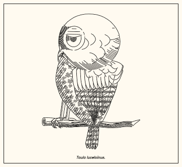
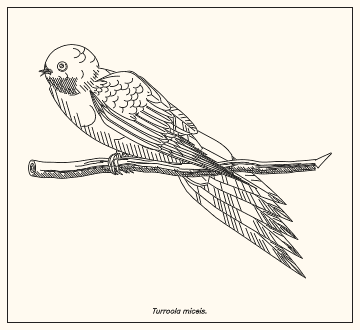
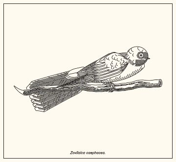
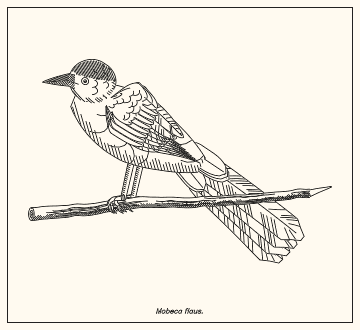
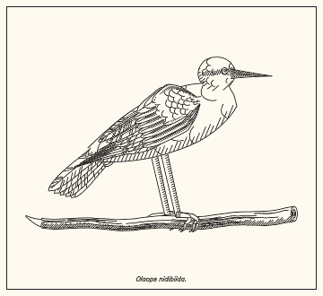
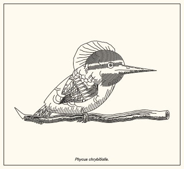
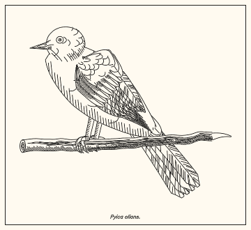
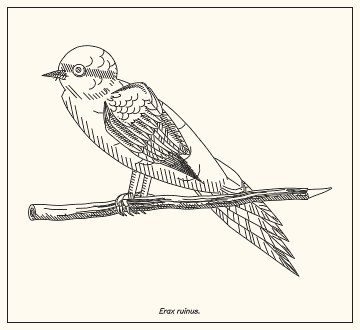

owl; 23 breaths/min, 2 head moves (pan), 2 blinks, tail none

swallow; 57 breaths/min, 3 head moves (saccade), 2 blinks, tail none

swallow; 61 breaths/min, 5 head moves (saccade), 1 blinks, tail none

corvid; 22 breaths/min, 2 head moves (saccade), 2 blinks, tail none

wader; 34 breaths/min, 3 head moves (saccade), 1 blinks, tail pump

kingfisher; 48 breaths/min, 3 head moves (saccade), 1 blinks, tail flick

thrush+; 39 breaths/min, 4 head moves (saccade), 0 blinks, tail flick

warbler; 69 breaths/min, 7 head moves (saccade), 5 blinks, tail flick